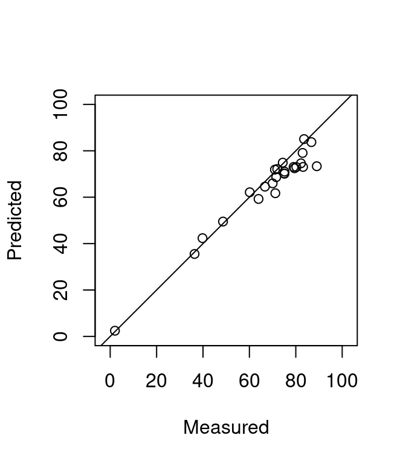

9 Derived metrics at the cloud level
9.1 Overview
The “cloud” level of regularization corresponds to the computation of derived metrics using all available points. As seen in section 8, calculating derived metrics for the whole point cloud is straightforward and users only need to provide a formula to calculate metric(s) of interest. For example, to calculate the average height (mean(Z)) of all points we can run the following:
LASfile <- system.file("extdata", "Megaplot.laz", package="lidR")
las <- readLAS(LASfile)
cloud_metrics(las, func = ~mean(Z)) # calculate mean height
#> [1] 13.27202To calculate more than one metric a custom function needs to be used, or one of the pre-defined functions within lidR. To calculate the whole suite of 36 metrics defined in stdmetrics_z() we can use func = .stdmetrics_z. When several metrics are computed they are returned as a list.
9.2 Applications
Point cloud metrics become interesting when computed for a set of plot inventories. In this case it can serve to compute a set of metrics for each plot, where known attributes have been measured in the field to construct a predictive model.
In the following example we load a collection of .las files storing clipped plot inventories and we apply cloud_metrics() on each file. We also load a file that contains the ground truth for the value of interest G measured in the field.
plots <- list.files("path/to/plot/inventory/")
inventory <- read.table("ground_inventory.txt")
metrics <- lapply(plots, function(file) {
las <- readLAS(file)
cloud_metrics(las, .stdmetrics_z)
})
metrics <- data.table::rbindlist(metrics)
metrics$G <- inventory$GLook at the content of inventory and metrics. inventory contains the plot IDs, their coordinates, and G a value of interest. metrics contains 36 derived metrics for each plot.
head(inventory)
#> ID X Y G
#> 1 1 5239065 5239065 82.22184
#> 2 2 5238369 5238369 70.02693
#> 3 3 5238584 5238584 75.11133
#> 4 4 5238137 5238137 71.57185
#> 5 5 5239443 5239443 83.13536
#> 6 6 5238016 5238016 74.37912
head(metrics[,1:8])
#> zmax zmean zsd zskew zkurt pzabovezmean pzabove2 zq5
#> 1: 23.201 9.684232 6.403662 -0.30359793 1.813354 59.38975 75.65272 0.0000
#> 2: 23.380 5.682300 5.454454 0.77093159 2.471645 39.87792 63.13327 0.0000
#> 3: 21.615 4.349950 3.704904 1.11213256 4.432349 44.01489 71.36655 0.0000
#> 4: 19.346 5.210034 4.230432 0.82895943 3.081483 42.35439 72.25767 0.0000
#> 5: 24.483 9.873574 6.573746 -0.52477869 1.780004 65.59885 71.74603 0.0000
#> 6: 17.771 6.608375 4.016224 0.03936153 2.253798 50.29791 83.24044 0.0483We have computed many metrics for each plot and we known the value of interest G. We can use that to build a linear model with some metrics.
model <- lm(G~zmax+zmean+pzabove2+zq50+zq90, data = metrics)
summary(model)
#>
#> Call:
#> lm(formula = G ~ zmax + zmean + pzabove2 + zq50 + zq90, data = metrics)
#>
#> Residuals:
#> Min 1Q Median 3Q Max
#> -5.2054 -2.0841 -0.2869 0.6100 11.5321
#>
#> Coefficients:
#> Estimate Std. Error t value Pr(>|t|)
#> (Intercept) -0.58773 3.82705 -0.154 0.87957
#> zmax 0.92547 0.31427 2.945 0.00832 **
#> zmean -1.75289 3.30439 -0.530 0.60193
#> pzabove2 0.70355 0.07606 9.249 1.82e-08 ***
#> zq50 1.66536 1.45340 1.146 0.26609
#> zq90 0.40959 0.95082 0.431 0.67148
#> ---
#> Signif. codes: 0 '***' 0.001 '**' 0.01 '*' 0.05 '.' 0.1 ' ' 1
#>
#> Residual standard error: 3.97 on 19 degrees of freedom
#> Multiple R-squared: 0.9664, Adjusted R-squared: 0.9576
#> F-statistic: 109.4 on 5 and 19 DF, p-value: 2.507e-13We can see that the metrics zmax and pzabove2 are the significant ones meaning that a predictive model of G can be written \(0.7018 \times pzabove2 + 0.9268 \times zmax\).
plot(inventory$G, 0.7018 *metrics$pzabove2 + 0.9268 * metrics$zmax, xlab = "Measured", ylab = "Predicted", xlim = c(0, 100), ylim = c(0,100), asp = 1)
abline(0,1)
This example can be improved. In section 14 we will study how to extract a ground inventory and in section 16 we will study more in depth modeling presenting a complete workflow from the plot extraction to the mapping of the predictive model.